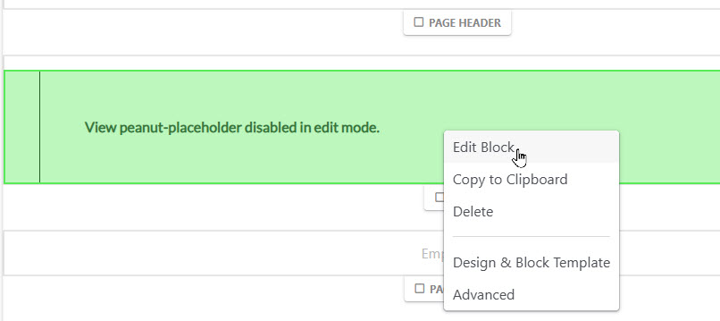
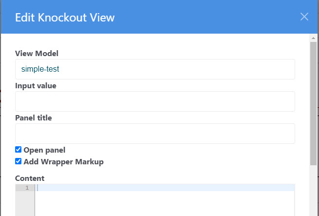

First, of course we must create the viewmodel and associated configuration as described in View Models and Views
Once we have a viewmodel, we can installing on our ConcreteCMS with the "Knockout View" block. The block can be placed on any page along with other content. Multiple viewmodels can be placed on a page. For more information see (Multiple Viewmodels)[multiple-viewmodels.html].
Most viewmodels produce the entire content for the page. We provide the "Peanut Host Page" page type for convenience.
After dropping the block on the page, edit the block:

Enter the viewmodel identifier in the "View Model" field. This must correspond to an entry in your viewmodel.ini file. This is all that is required in most cases. The section below explains the optional fields.

[simple-test]
vm=tests/SimpleTest
view=contentThis is all it takes to install a viewmodel in your ConcreteCMS page. But, a lot is going on to make your view model presentation appear as if by magic. If you want to know how the magic is done, see: Peanut Startup Sequence in ConcreteCMS